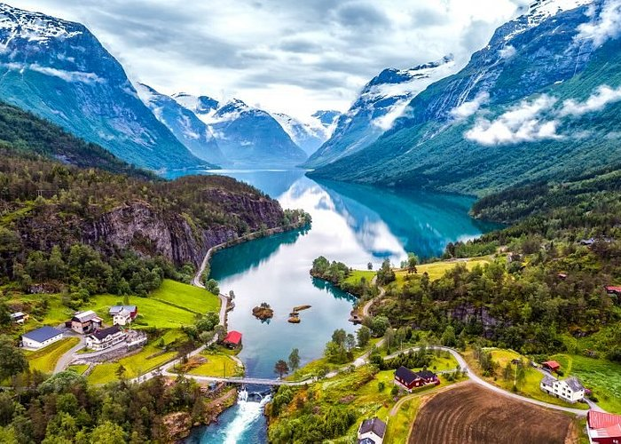

Bandera: La cruz simboliza la cristianidad el color azul simboliza su asociación con Suecia, el blanco es decoración, y el rojo es por Denmark, los tres colores simbolizan la independencia del país.
Religion: En Noruega la religión es el cristianismo luterano pero es un país que acepta a todos eso hace que haya más religiones.
Politica: En Noruega, una monarquía constitucional, la autoridad del rey es principalmente simbólica. La familia real es una rama de la Casa Alemana de Saxe-Coburg y Gotha, así como la línea principesca de Schleswig-Holstein-Sonderburg-Glücksburg.
Cultura: Muchos noruegos se visten con atuendos tradicionales, o bunda, para eventos especiales porque tienen un fuerte sentido de la historia y compromiso cívico. La tolerancia, el respeto y la igualdad figuran entre los ideales más significativos de la cultura noruega.

10 ciudades mas visitadas:
Noruega tiene 356 municipios y 11 provincias
Las 10 ciudades más importantes son: